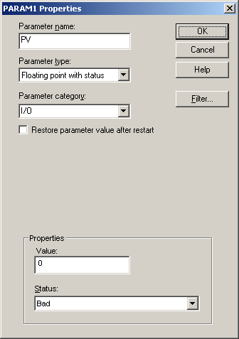

Add a module-level parameter for the process output value
Select the Special Items palette.
Right-click the
Output parameter and select
Help to see a description.
Drag and drop the
Output parameter onto the diagram to the right
of the AI function block.
A
Properties dialog box appears.
Change the parameter name to PV (for process value).

Select
Floating point with status in the
Parameter type field, select
I/O in the
Parameter category field, accept the default
status (it will be overwritten), and click OK.
The block named PV now appears on the function block
diagram.